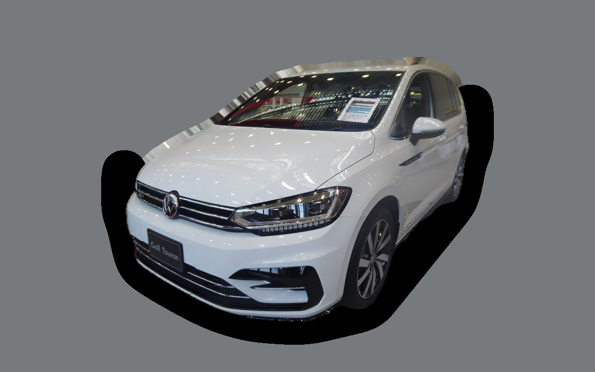

What does a Volkswagen Touran cost per month?
A 2022 Volkswagen Touran costs about SEK 4,434 a month, all in.
SEK 4,434per month, 2022 model
SEK 316,000price, 2022 model
SEK 413,900last new price
Cvalue grade (2022)

_front.jpg){kind=link}
Monthly cost by model year
| Model year | Version in the calculation | Price | Per month | Grade |
|---|---|---|---|---|
| 2025 | TSI 150 DSG, 5 säten, Life | SEK 357,000 | SEK 5,006 | C |
| 2022 | TSI 150 DSG, 5 säten, Life | SEK 316,000 | SEK 4,434 | C |
| 2019 | TSI 150 DSG, 5 säten, Life | SEK 220,000 | SEK 3,943 | C |
Based on 5 years of ownership and 12,500 km a year, with fuel prices from 2026-10-22. The monthly cost includes depreciation, fuel, servicing and repairs, insurance and road tax.
How the cost splits for a 2022 car
- Depreciation: SEK 1,896/mo
- Fuel: SEK 1,422/mo
- Servicing and repairs: SEK 630/mo
- Insurance: SEK 378/mo
- Road tax: SEK 107/mo
Used prices in ads
| Model year | Median price | Ads | Typical mileage |
|---|---|---|---|
| 2025 | SEK 354,900 | 29 | 26,000 km |
| 2023 | SEK 349,900 | 5 | 54,000 km |
| 2021 | SEK 314,800 | 4 | 84,000 km |
| 2020 | SEK 254,400 | 8 | 115,000 km |
| 2018 | SEK 239,800 | 7 | 132,000 km |
| 2017 | SEK 154,900 | 11 | 152,000 km |
| 2016 | SEK 130,000 | 5 | 159,000 km |
The median price in Swedish ads by model year in October 2026 (source: Blocket, AutoUncle). Ad prices are asking prices, and the final price may be lower.
Engines and versions
| Engine | Fuel | Power | 0–100 km/h | Consumption (WLTP) | Range | Model years | Extra cost |
|---|---|---|---|---|---|---|---|
| TSI 150 DSG | Petrol | 150 hp | 9.1 s | 6.6 l/100 km | – | 2016–2025 | – |
| TDI 150 DSG | Diesel | 150 hp | 9.4 s | 5.3 l/100 km | – | 2016–2025 | +SEK 46,000 |
- Seats: 5 säten, 7 säten (+SEK 9,000)
- Trim: Life
Facts
- Body
- Estate
- Model years
- 2016–2025
- Last new price
- SEK 413,900
- Boot
- 743 litres
- Euro NCAP
- 5 of 5 stars
- New-car warranty
- 3 years
- Reliability
- 4 of 5
- Comprehensive insurance, estimate
- SEK 6,200/yr
- Servicing, estimate
- SEK 4,200/yr
Common faults to watch for
- DSG gearbox DQ200 (mechatronics, clutch), repair about SEK 20,000
- Leaking plastic water pump and thermostat housing, repair about SEK 6,500
- EGR and particulate filter (TDI), repair about SEK 9,000
- Haldex pump (AWD), repair about SEK 7,000
- DSG gearbox (mechatronics), repair about SEK 18,000
The faults apply to some engines and model years. The calculator works out the risk for the exact version you choose.
Pros and cons
Pro
Practical family car with a big boot and optional seven seats.
Con
No longer made, and not much fun to drive.
Similar cars
 Skoda Superb Estate IIISEK 4,492/mo as a 2020 model
Skoda Superb Estate IIISEK 4,492/mo as a 2020 model Volvo V60SEK 4,282/mo as a 2023 model
Volvo V60SEK 4,282/mo as a 2023 model Audi A4 AvantSEK 4,676/mo as a 2021 model
Audi A4 AvantSEK 4,676/mo as a 2021 model Volvo XC70SEK 4,186/mo as a 2013 model
Volvo XC70SEK 4,186/mo as a 2013 model Volvo V90SEK 4,174/mo as a 2022 model
Volvo V90SEK 4,174/mo as a 2022 model Subaru OutbackSEK 4,783/mo as a 2023 model
Subaru OutbackSEK 4,783/mo as a 2023 model
Updated 2026-10-28 · ad data Oct 2026